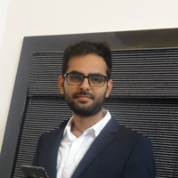

{% seo %} {% include head-custom.html %}

Hello ! I'm Kunal Parwani
Engineering Manager, Software Quality Assurance & SRE ||
Mickleham VIC 3064
+61 420 624 634 || kunal.parwani@hotmail.com
LinkedIN: @kunal-parwani || github: kunal-parwani
{{ content }}